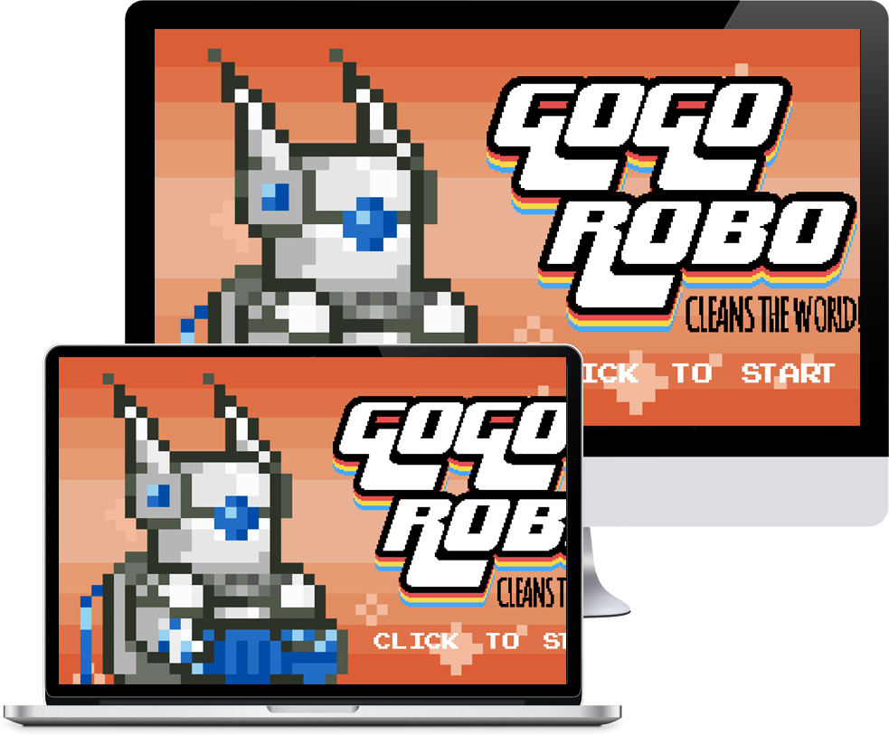

GOGO ROBO
http://gogocleans.com

“GOGO Robo Cleans The World!” was my senior year’s fun attempt to try and make an interactive experience that teaches the community to go out and help clean up their own world. A browser based video game that is remniscent of the old arcade-style one’s from a few years back. I was the head graphic designer of the game and made, just about every image, character, and health bar that you see in it. Definitely one of my more experimental projects, I worked entirely in pixel based graphics, looking deep into references from older games like Megaman, Galaga, and even Legend of Zelda, I had so much fun with this.